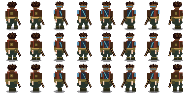
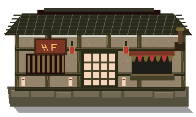

Astro Fighters — Integrated Art Review 01
README continuation loop: develop → integrate → score → refine. The scene below is interactive and uses layered runtime assets.
38 / 50 · INTERNAL TEST CANDIDATE · NOT PRODUCTION APPROVEDPlayable integrated scene
8-way movementhidden 32×32 logicdressed fighterlayered architecture + propsauthored foreground fade
Component sheet review


These components are reviewed through the playable scene above. No checklist item is complete merely because its PNG exists.
Gate result
Critical minimums pass for internal testing, but the total remains below the README's 42+ production threshold. No checklist items are struck. Next work targets material variety, lived-in density, stronger Imperial City infrastructure identity, animation coverage, and a second dressed character/NPC.